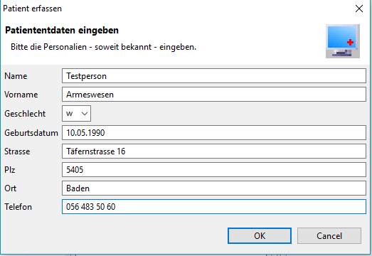

Agenda
Contents
Anforderungen
Um die Funktionen der Agenda in Elexis zu nutzen, benötigen sie das entsprechende Plugin. Es gibt 2 Ausführungen der Agenda. Die eine ist Web-basiert (1). Und die andere ist die ältere Agenda, welche direkt in Elexis genutzt wird (2).
Konfiguration
Die Agenda bietet viele verschiedene Einstellungsmöglichkeinte, um Sie auf ihre Bedürfnisse anzupassen. Für jeden Mitarbeiter kann man einen eigenen Bereich anlegen, welcher sich an die Aufgaben des Mitarbeiters richtet.
- Bereiche erstellen (links) und zuordnen. (rechts)
- Benutzdefinierte Termintypen erstellen.
- Benutzerdefinierte Terminstatus erstellen.

Ausserdem haben Sie die Option, Farben für die verschiedenen Termistatus und Termintypen zu setzen.
Zudem bietet die Agenda die Möglichkeit, die Tageseinteilung anzupassen.
- Hier wählen sie, aus welcher Bereich zu bearbeiten ist.
- Passen Sie hier die Zeiträume für die einzelnen Wochentage an.
- Entscheiden Sie, ab wann diese Änderungen gelten sollten.
Einführung
In der folgenden Anleitung wird Ihnen der Funktionsumfang der Agenda erklärt.
- Das Agenda-Plugin bietet 7 verschiedene Views, um jedem die wichtigsten Funktionen und Informationen anzuzeigen.
- Agenda - Meistens für Ärzte, (wird jeweils nur ein Bereich angezeigt)
- Agenda gross - tabellarische Überischt über einen Bereich
- Parallel - Webbasierte Version der Parallelanzeige
- Parallelanzeige - Grafische Übersicht aller Bereiche an einem Tag
- Terminliste - zukünftige und vergangene Termine des aktuell gewählten Patienten
- Week - Webbasierte Version der Wochenanzeige
- Wochenanzeige - Grafische Übersicht eines Bereiches über eine Woche
Nachfolgend sehen Sie, wie die verschiedenen Views in Elexis aussehen.
Einen Termin vergeben
Dieses Fenster öffnet sich, wenn Sie einen neuen Termin vergeben wollen oder Sie einen Doppelklick auf einen bereits vorhandenen Termin ausführen. Der Termin wird stets dem aktuell angewählten Patienten zugeordnet. Nachfolgend werden Ihnen die Funktionen der Terminvergabe erklärt.
- Definieren Sie in diesem Bereich, an welchem Tag der Termin stattfindet.
- Legen Sie hier die Startzeit des Termins und die Dauer fest. Somit wird die Endzeit kalkuliert.
- Hier haben Sie die Möglichkeit den Termin an einem bestimmten Zeitpunkt einzusetzen, zu ändern oder zu löschen. Zudem können Sie nach Terminen mit den Status „Notfall” oder „vergangene” suchen. Falls Sie wünschen die Terminliste auszudrucken, haben Sie hier die Möglichkeit mit dem Button „Drucken”.
- An dieser Zeitliste kann man die Terminzeiten genauer und schneller festlegen. Mit einem einfachen Klick auf die Zahlen (unterhalb der Leiste), werden die Zeitabstände verändert.
- Zuletzt gibt es noch einige sehr wichtige Informationen, welche Sie beim Erstellen eines Termins nicht auslassen sollten.
- - Personalien: Sie sehen, welchen Patienten Sie angewählt haben. Sie können zudem noch einen Freitext erstellen.
- - Bereich: Legen Sie fest, welchem Ihrer Bereiche der Termin zugeordnet werden sollte.
- - Termintyp: Bestimmen Sie, um was es sich für einen Termintyp handelt. Ist es ein Notfall, eine Infusion welche gemacht werden muss, oder vielleicht auch ein Röntgenbild?
- - Terminstatus: Definieren Sie, welchen Ihrer verschiedene Terminstatus der Termin besitzen sollte.
Einen Patienten erfassen
Sobald der Patient die Klinik zum ersten Mal betritt, wird er in der Regel erfasst. Auf folgende können Sie einen Patienten erfassen.
Mit dem grünen „Plus-Symbol” erfassen Sie einen neuen Patienten. Als nächstes öffnet sich dieses Fenster.

Hier können Sie die Ihnen bekannten Patientendaten eintragen und anschliessend mit „OK” bestätigen.